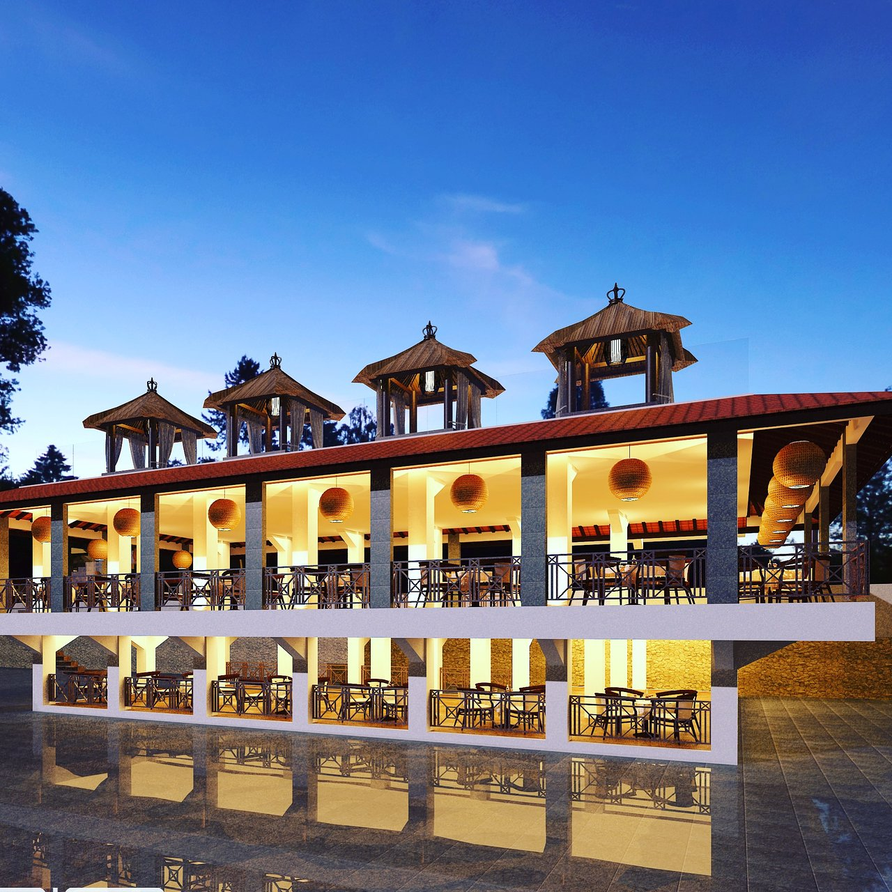
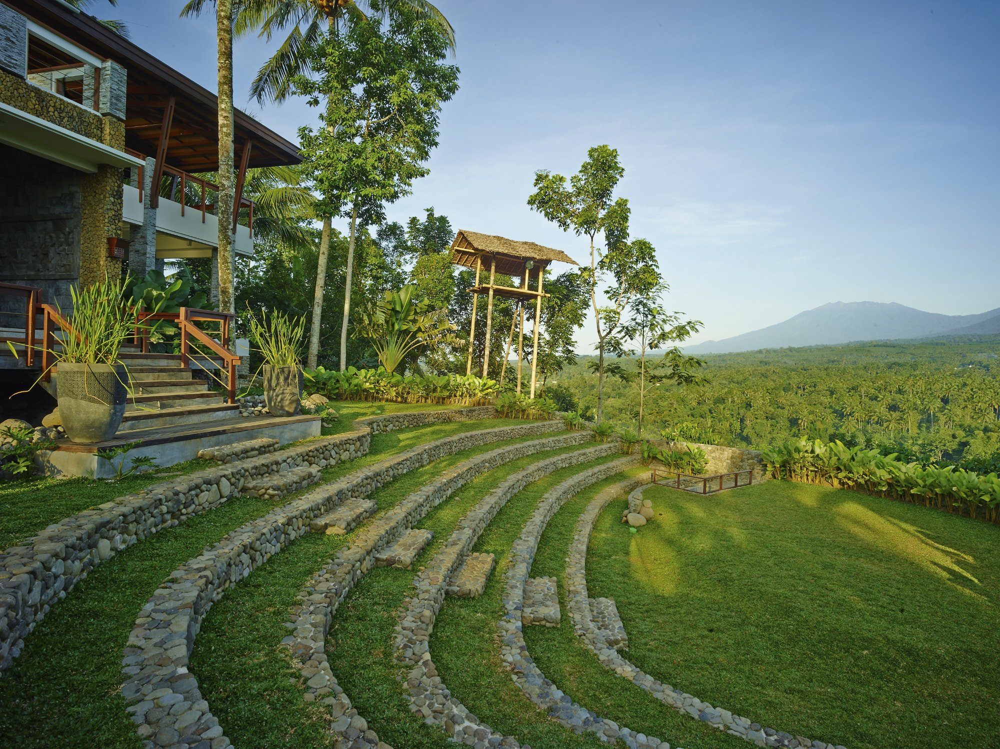
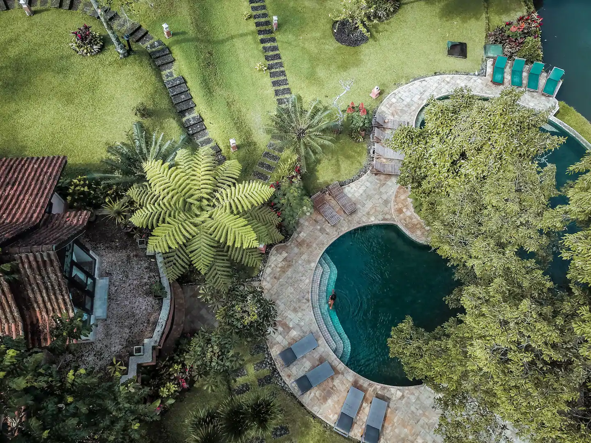

Kawah Ijen
Ijen Crater is an acidic crater lake at the top of Mount Ijen with a lake depth of 200 meters and a crater area of 5,466 hectares. Ijen crater lake is known as the largest strong acid lake in the world. Ijen Crater is in the area of Ijen Tourism Park, Bondowoso Regency and Banyuwangi Regency, East Java. The phenomenon of eternal blue fire or eternal blue fire is in the Ijen crater, and this natural sight only occurs in two places in the world, namely Ethiopia (Mount Dallol) and Ijen. Blue fire can only be seen by the human eye when there is no light, therefore the ideal time to see it is 2 to 4 in the morning, because the climbing of Mount Ijen only starts to open at 2 in the morning. From Ijen Crater, we can see views of other mountains in the Ijen Mountains complex, including the summit of Mount Marapi which is east of Ijen Crater, Mount Raung, Mount Suket, and Mount Rante.
Accomodation
Grand Harvest Resort and Villas
 location: Dusun Krajan Tamansari, Licin, Banyuwangi 68454 Indonesia >Rp. 495.868/malam/kamarGrand Harvest Resort and Villas
 Jl. Blimbingsari, Desa Taman Sari Licin, Banyuwangi 68454 Indonesia >Rp. 413.223/malam/kamarGrand Harvest Resort and Villas
 Dusun Pesucen Randu Agung RT. 2 RW. 2 Desa Kluncing, Kec. Licin Banyuwangi, Licin, Banyuwangi, Jawa Timur, Indonesia, 68454 >Rp. 968.800/malam/kamar.jpeg)
.jpeg)
.jpeg)
.jpeg)